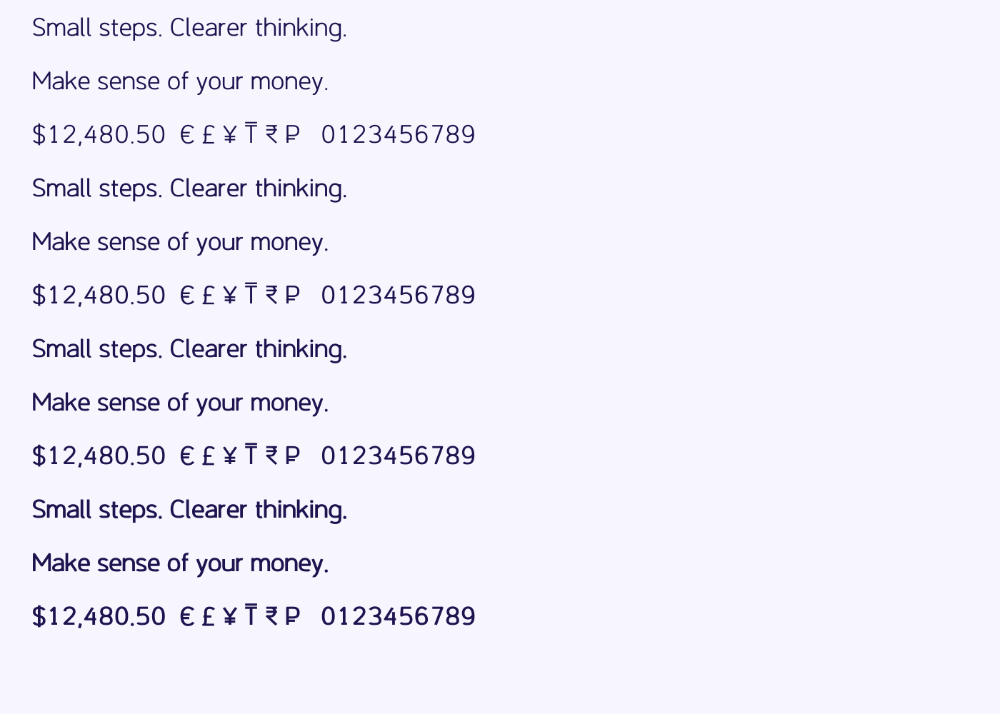

Study A is an upright humanist sans serif developed for everyday interface text and financial education. It has oval bowls, open apertures, a two-storey a and single-storey g. Four static weights include Regular, Medium, SemiBold and Bold. Tabular figures and a slashed zero are optional.

This is a revision of the separately drawn Nevlin Sprout project, following Google Fonts' design-quality rejection. The build uses editable Python drawings and UFO sources with Fontmake. No Inter or SF Pro outlines are build inputs. AI-assisted development is disclosed; automated checks do not establish editorial quality.
The public family name, copyright-owner confirmation, CLA and maintenance commitments are pending. This package is for preliminary design review and is not approved for Google Fonts publication. A version number of 1.000 denotes the candidate binary format, not approval.
Sources: repository root in https://github.com/nevlin-ltd/nevlin-font.